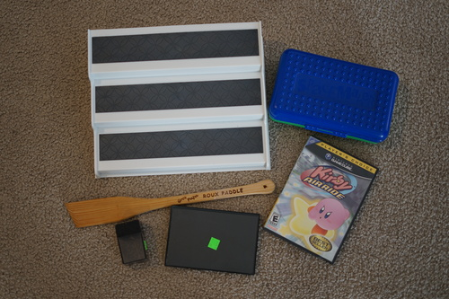

I straightened Hina's new wig. was it a good choice? was it bad? idk but i did it anyway. how did she turn into a total punk in less than 2 months?
new box opening video up! check it out!
somehow i convinced ryan to come to the thrift store with me and he lucked out hard. he paid for everything.
ryan thought this would be good to cover with fabric and put my figures on
ryan's nostalgia got the better of him!!
the only other thing for me
im disappointed i didnt find it first! but im happy ryan found it!
i finished Japan Ai! it was very short as youd expect for a picture book. the whole book is cute and the final chapter is devoted to volks. she has a map of tenshi no sato, drawings of her omukae ceremony, and about her FCS order. I believe the trip was in February 2005. according to my extensive research, the doll she did the omukae ceremony for was her Violet (MSD Mika) and she ordered Botanmaru (MSD F13). She has botanmaru at the bottom of her list of dolls as (OLD) in 2009 so i assume she sold him at some point? must not have been a life changing experience! it wasnt mentioned in the book, but Cassiel and Yuzuko were there with her!
in an attempt to find the photos of the omukae ceremony, i went through more archives of personal BJD homepages. I read they may be in haute doll august 2005, but i haven't found them online yet. there's a lot of good homepages though! Unfortunately many have lost photos. I need to go through them all and make a section in my doll links for archived pages sometime. there's a ton of them. I was able to find some information on forever doll, which i added to my doll memories page.
i realized how hard it is to find photos of the non-fcs volks hands and with the help of pompon, we were able to collect the official photos of the SDGrG hands. hopefully next time theres an online FCS for SDGrB and SD16 I'll remember to collect the photos
volks news is just insane this time and i havent even found scans! theres like 3 releases that are going to be huge. Anthy and Utena are cool to see! the two SD17 boys (regulus and max) are like dang. so good. its hard to even pick a favorite between the two! and the frozen girls of course. i dislike elsa more and more with every new photo, but anna is very cute! Surprisingly, volksusa is doing a preorder and not a lottery for them. SDGr Sapphire's lottery is happening soon too! its honestly quite cruel to release all these at once
I was very pleased to see that the other f-100 finalists are making it into FCS. I'm really into f-101 after seeing his photo! i wasnt really too into any of them from their sculpted prototypes so maybe its just the faceup on this one. i noticed all the front and side photos are gone from the contest page, so im going to go look for them. here's a reminder to save everything you want to remember, because it will disappear.
i realized how hard it is to find photos of the non-fcs volks hands and with the help of pompon, we were able to collect the official photos of the SDGrG hands. hopefully next time theres an online FCS for SDGrB and SD16 I'll remember to collect the photos
tenshi no mado's remodeling was just finished! theres a ton of good photos of it on twitter! if you managed to read this far, but somehow aren't interested in volks, it is EXTREMELY rare to find photos inside of the locations (sumika, mado, sato) because they don't allow photos 99.9% of the time. Take this chance to look if you're curious! the one offs are so cute! many of them are galerie de espirit themed! theres a bunch of blonde, pink DSD Una. SO CUTE. mado looks like such a lovely place to visit.